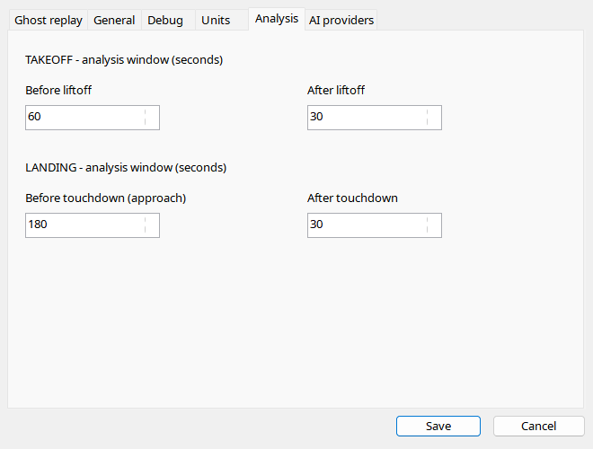

Four fields independently specify time before/after liftoff and before/after touchdown, in seconds. Larger windows show configuration and stabilization but increase input and may exceed model context. File boundaries limit actual coverage: entering 180 seconds cannot add samples before recording began. New reports use the new range; an already stored report is not rewritten automatically.
| Option / action | Behavior and limitations |
|---|---|
| Takeoff before | Default 60 seconds, range 1–300, before liftoff. Longer context may reveal the roll but increases input size. |
| Takeoff after | Default 30, range 1–300; initial climb context, not whole-flight performance. |
| Landing before | Default 180, range 1–300; available approach samples only. Increasing it cannot restore missing history. |
| Landing after | Default 30, range 1–300; rollout/subsequent contacts. |
| Limits | Recording bounds, model context and timeout constrain the effective input. |
